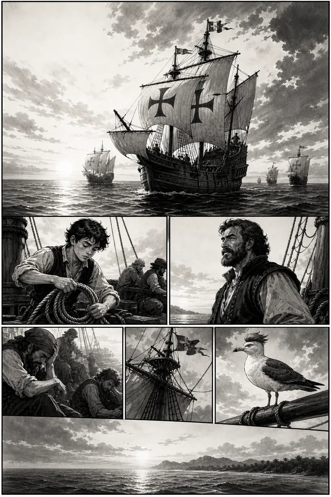
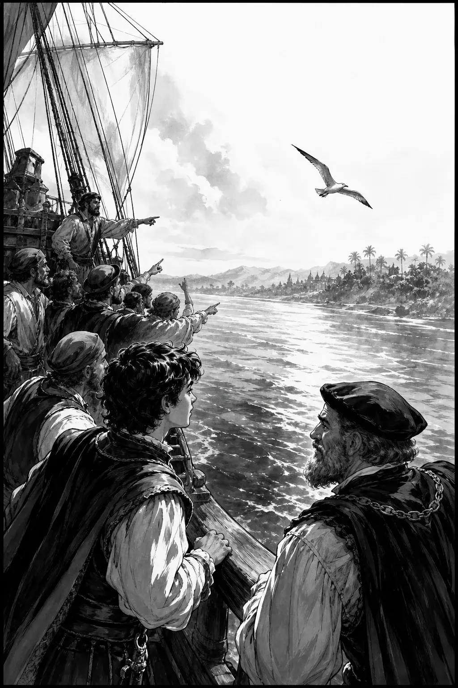
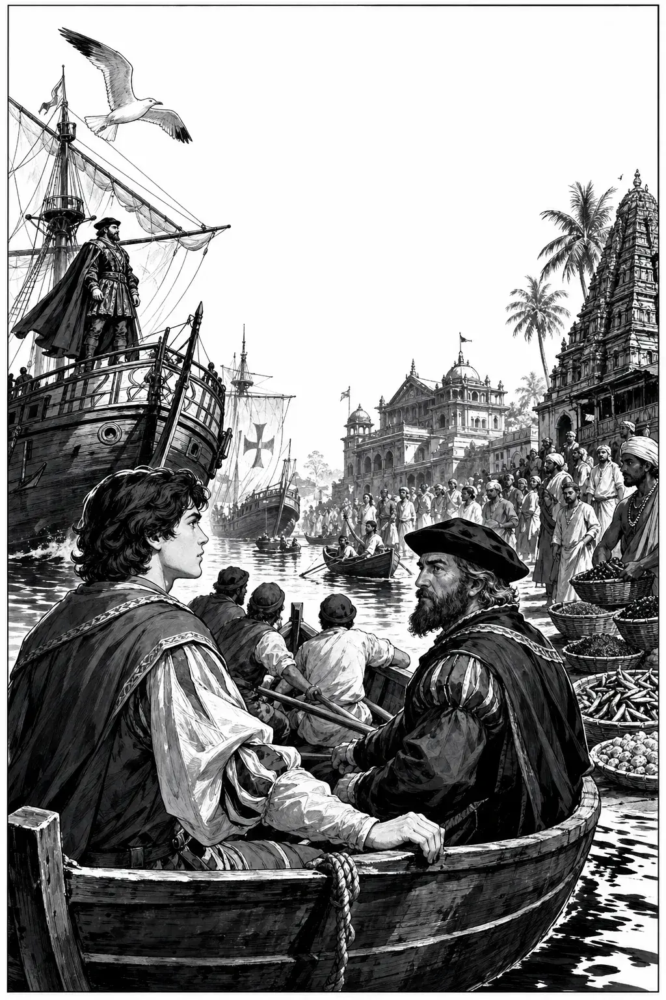
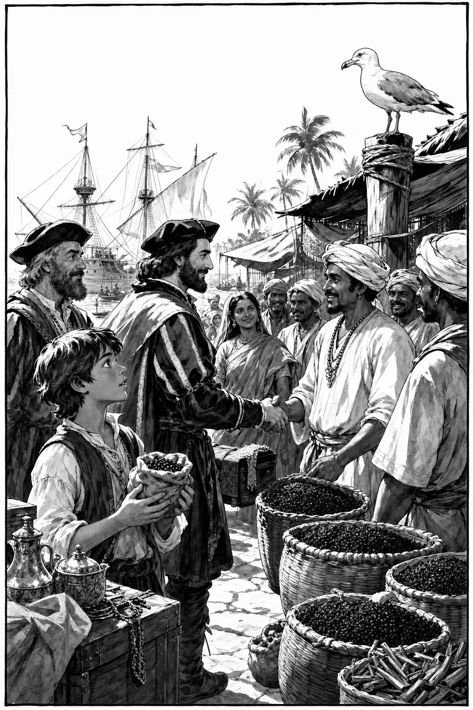
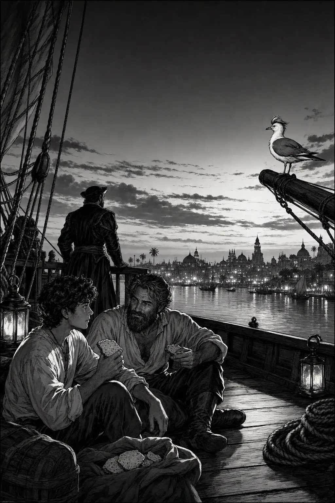

Índia · 1/5
Setup

GaivotaMuitos meses. Muita água. Mas o ar… cheira a terra.
AfonsoGaspar… ainda acreditamos?
GasparAcreditamos no rumo. O resto… vem.
Índia · 2/5
Rising action

AfonsoTerra!
GasparCalecute… se o piloto não mentiu.
GaivotaA costa abre os braços. O mundo encolhe.
Índia · 3/5
Turning point

GasparNão gritem. Olhem. Ouçam.
AfonsoNunca vi tantas cores…
GaivotaDois oceanos… encontraram-se aqui.
Índia · 4/5
Consequence

AfonsoIsto… é pimenta?
GasparIsto é o sonho do rei. E o nosso regresso… talvez.
GaivotaO comércio começa com um olhar.
Índia · 5/5
Resolution

AfonsoChegámos ao fim do mundo?
GasparChegámos a outro começo. Portugal… tocou a Índia.
GaivotaGuardo este porto. O mar ligou dois mundos.
Study pack
100 words · PT → EN
Study pack — Vasco da Gama
Read the comic once for story, once for words. Say each line aloud. Prefer Portuguese answers in the quiz.
Glossary (100)
índiaIndia
calecuteCalicut (Kozhikode)
vascoVasco
gamaGama
boa-esperançaGood Hope
monçãomonsoon
especiariasspices
pimentapepper
canelacinnamon
cravo-da-índiaclove
gengibreginger
sândalosandalwood
sedasilk
mercadormerchant
feirafair / market
porto-indianoIndian port
rajaraja / ruler
embaixadaembassy
presentegift
cartaletter
tratadotreaty
acordoagreement
intérpreteinterpreter
língualanguage / tongue
estrangeiroforeigner / stranger
tripulaçãocrew
grumetecabin boy
timoneirohelmsman
pilotopilot (navigator)
navegadornavigator
almiranteadmiral
armadaarmada / fleet
naucarrack / large ship
batelsmall boat
convésdeck
porãohold (ship)
proabow (ship)
popastern
lemerudder
astrolábioastrolabe
latitudelatitude
longitudelongitude
estrela-polarPole Star
cruzeiro-do-sulSouthern Cross
oceano-índicoIndian Ocean
áfrica-orientalEast Africa
mombaçaMombasa
malindiMalindi
guiaguide
piloto-árabeArab pilot
confiançatrust
desconfiançadistrust
fomehunger
escorbutoscurvy
doençaillness
remédiomedicine
água-docefresh water
barrisbarrels
biscoitoship biscuit
carne-secadried meat
vinagrevinegar
correntecurrent
espumafoam
terra-à-vistaland ahoy
costacoast
palmeirapalm tree
praiabeach
templotemple
mesquitamosque
paláciopalace
elefanteelephant
tigretiger
arrozrice
cocococonut
bananabanana
chátea
incensoincense
pérolapearl
rubiruby
diamantediamond
moedacoin
pesoweight / scale
balançabalance scale
preçoprice
lucroprofit
perdaloss
féfaith
milagremiracle
milhamile
légualeague (distance)
mêsmonth
anoyear
eraera
jornadajourney
aventuraadventure
salvaçãosalvation / rescue
porto-segurosafe harbor
brasãocoat of arms
cruz-de-cristoOrder of Christ cross
padroeiropatron saint
Comprehension (answer in PT)
- Para onde chega a frota nesta história?
- Quem são Afonso e Gaspar?
- O que Gaspar pede quando se aproximam do porto?
- O que representa a pimenta para eles?
- Como acaba a história?
Cultural note
In May 1498 Vasco da Gama’s ships reached Calicut (Kozhikode) on India’s Malabar Coast — completing a sea route from Europe around Africa. The comic follows ordinary sailors at the hinge of arrival: land in sight, harbor contact, pepper, and the quiet sense that two oceans had just made the world smaller.
Next
Free Ep.01: O Terramoto (1755) · Hub: series page · More paid episodes on Gumroad